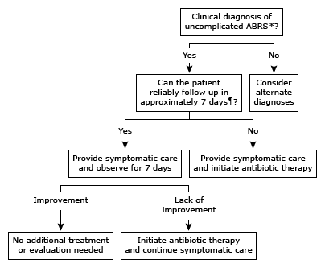

Viruses cause acute sinusitis in 90-98% of acute rhinosinusitis.
Acute: < 4 weeks. Chronic: > 12 weeks. Recurrent: ≥ 4 episodes in 1 year.
This page was last updated on
Disclaimer: Information presented in the template should be re-checked and should not be used alone to guide patient care or substitute for clinical judgement.
Note: Please copy text into the EMR prior to adding any HIPPA information. Though no information is being saved/transmitted on this site, typing private information into a web page is generally bad practice.